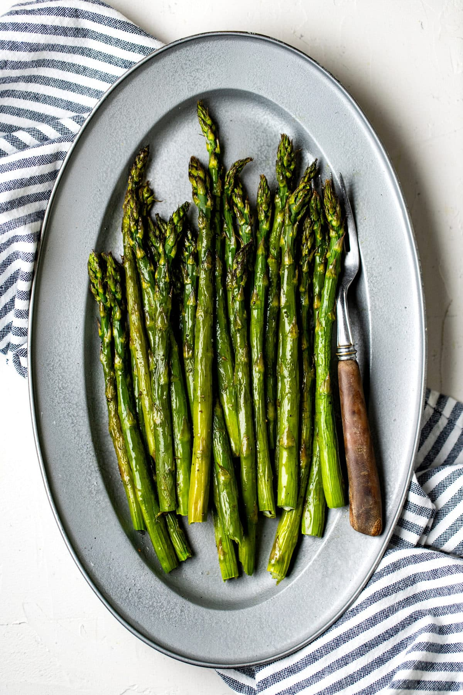

Simply Steamed Asparagus
Homepage
Recipe source

Simply Steamed Asparagus
This steamed asparagus is tender and tasty! Try using vinaigrette dressing in place of the butter, too.
Ingredients
- 1 bunch asparagus spears
- 1 teaspoon butter
- 1/4 teaspoon salt
Steps
-
Place 3 cups water in the bottom half of a steamer pan set. Add butter and salt and bring to a boil.
-
Trim dry ends off of asparagus. If spears are thick, peel them lightly with a vegetable peeler.
-
Place asparagus spears in the top half of the steamer pan set. Steam until asparagus is tender, 5 to 10 minutes depending on thickness.